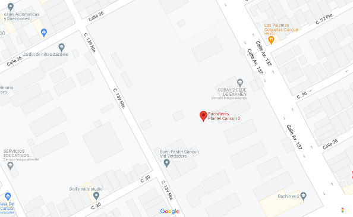

¿En dónde se encuentra ubicado?
Entre Av.Francisco I Madero, les dejo un pequeño mapa para que lo ubiquen.
Misión y Visión
Somos una institución pública de educación media superior que forma integralmente a sus estudiantes bajo el enfoque de competencias, preparándolos para la vida, el mercado laboral y la educación superior, con los principios de calidad, equidad, inclusión, transparencia y rendición de cuentas.